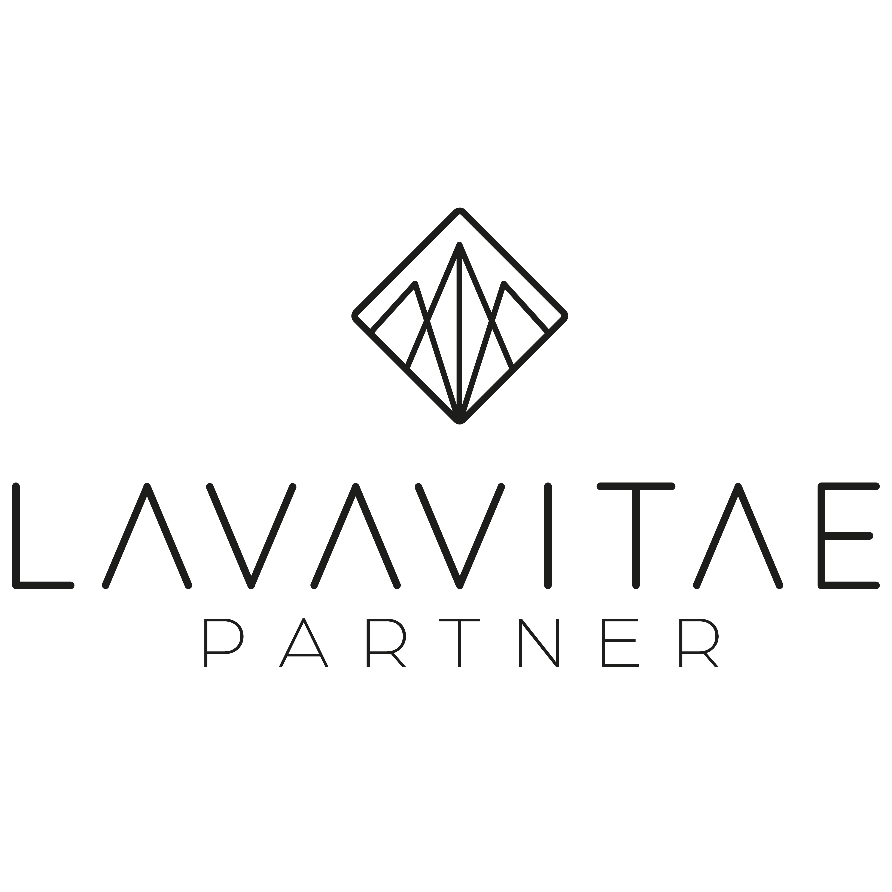

Was ist LavaVitae?

LavaVitae ist ein österreichisches Familienunternehmen mit Sitz in Fürnitz. Nach Angaben des Unternehmens wurde die Marke 2013 von Manfred Scherzer gegründet; seit 2024 gehört auch Julian Raupl zur Geschäftsführung. Das Sortiment verbindet mineralische Anwendungen unter dem Namen LAVA mit Nahrungsergänzungen der Linie VITA.
Die Bandbreite ist groß – und genau deshalb lohnt es sich, nicht einfach „irgendetwas für die Gesundheit“ zu bestellen. Sinnvoller ist die Frage: Welche Routine möchte ich überhaupt unterstützen, welche Inhaltsstoffe sind enthalten und passt das Produkt zu meiner persönlichen Situation?
Was mir gefällt
Die Produktwelten lassen sich nach Alltagsthemen sortieren: etwa Greens, Darm-Routine, Magnesium, Omega-Fettsäuren oder äußerliche Anwendungen.
Was wichtig bleibt
Ein gutes Etikett ersetzt keine individuelle Beratung. Dosierung, Allergene, Wechselwirkungen und die gesamte Nährstoffzufuhr gehören immer mit in die Entscheidung.
Zwei Produktwelten – unterschiedliche Aufgaben
Mineral und Anwendungen
Hierzu zählen unter anderem LAVA PURE mit Zeolith-Klinoptilolith sowie Produkte für Hautpflege, Zähne, Bad oder Einlegesohlen.
- LAVA PURE: Medizinprodukt – Hinweise und zeitlichen Abstand zu Arzneimitteln beachten.
- LAVA CREAM & GLOW: äußerliche Pflegeprodukte.
- LAVA DENTAL, BATH & INSOLES: Anwendungen für Zahnpflege, Bad und Alltag.
Nährstoffe und Pflanzenmischungen
Die VITA-Produkte reichen von Greens und Darm-Routinen bis zu Magnesium, Omega-Fettsäuren, Vitamin D3 sowie Mischungen für verschiedene Alltagssituationen.
- Greens: Pflanzenpulver mit zugesetzten Vitaminen und weiteren Zutaten.
- Mikronährstoffe: zum Beispiel Magnesium, Vitamin D3 oder Omega-3.
- Kombiprodukte: Rezepturen mit mehreren Nährstoffen und Pflanzenstoffen.
Nicht verwechseln: LAVA PURE ist laut Hersteller ein Medizinprodukt und kein gewöhnliches Lebensmittel oder „Extra“ für Smoothies. Verwende es ausschließlich entsprechend der aktuellen Gebrauchsanweisung.
Fünf sinnvolle Einstiege in das Sortiment
Diese Übersicht ist keine persönliche Einnahmeempfehlung. Sie hilft dir, die Produktgruppen vor dem Kauf schneller einzuordnen.
VITA GREEN
Eine Greens-Mischung mit Pflanzenzutaten, Vitaminen und Enzymkomplex zum Einrühren in Wasser oder Saft.
VITA GREEN genauer ansehen →VITA SYMBIO & PROBIO
Mikronährstoffe in Kapselform treffen auf ein Multispezies-Probiotikum für eine kombinierte Darm-Routine.
SYMBIO & PROBIO vergleichen →Magnesium
RELAX kombiniert drei Magnesiumverbindungen, SPORT liefert Magnesiumcitrat in praktischen Sticks.
Magnesiumvarianten vergleichen →Omega-3
VITA OMEGA bietet Fischölkapseln, VITA OMEGA VEGAN eine flüssige Alternative aus Algenöl.
Fisch- und Algenöl vergleichen →LAVA PURE
Ein CE-zertifiziertes Medizinprodukt mit Zeolith-Klinoptilolith als Pulver oder Kapseln.
LAVA PURE genauer ansehen →Welche Richtung passt zu deiner Routine?
| Wenn du suchst nach … | Schau zuerst bei … | Vor dem Kauf prüfen |
|---|---|---|
| einer grünen Mischung für Wasser oder Saft | VITA GREEN | Allergene, Vitaminmengen, Verträglichkeit und Verzehrempfehlung |
| einer strukturierten Darm-Routine | VITA SYMBIO / VITA PROBIO | Zutaten, Bakterienstämme, Lagerung und medizinische Ausgangslage |
| einer gezielten Magnesium-Ergänzung | VITA MAGNESIUM RELAX / SPORT | Verbindung, Dosierung und gesamte Magnesiumzufuhr |
| Omega-3 passend zu deiner Ernährungsform | VITA OMEGA / OMEGA VEGAN | Quelle, enthaltene Fettsäuren, Dosierung und Arzneimittel |
| einer mineralischen Anwendung | LAVA-Produktwelt | Produktstatus, Zweck, Gebrauchsanweisung und Warnhinweise |
Qualität: Was das Unternehmen angibt – und was du selbst prüfen solltest
LavaVitae beschreibt seine Herstellung als europäisch und verweist auf ein Team mit Fachwissen aus Medizin, Pharmazie, Biologie und Biochemie. Außerdem gibt das Unternehmen an, pflanzliche Kapselalternativen zu verwenden und Zusatzstoffe möglichst sparsam einzusetzen, sofern die technische Herstellung das zulässt. Das sind Herstellerangaben, keine unabhängige Produktprüfung durch Smart Health Living.
1. Etikett vor Werbung
Zutatenliste, Mengen pro Tagesdosis und Warnhinweise sagen mehr aus als ein schöner Produktname.
2. Bedarf vor Trend
Ein Laborwert oder fachlicher Rat kann bei einzelnen Nährstoffen sinnvoller sein als wahlloses Ausprobieren.
3. Einzeln starten
Wer mehrere neue Produkte gleichzeitig beginnt, kann Verträglichkeit und Nutzen schlechter einordnen.
So wählst du verantwortungsvoll aus
- Vergleiche die Tagesdosis mit anderen Nahrungsergänzungen, die du bereits nutzt.
- Beachte Allergene, Unverträglichkeiten und die Hinweise auf der aktuellen Verpackung.
- Halte dich an Verzehr- beziehungsweise Gebrauchsempfehlung; „mehr“ ist nicht automatisch besser.
- Kläre Produkte bei Medikamenteneinnahme, chronischen Erkrankungen, Schwangerschaft oder Stillzeit vorher ärztlich oder pharmazeutisch ab.
- Beende die Anwendung und hole fachlichen Rat ein, wenn unerwartete Beschwerden auftreten.
Kann ein Produkt in eine Rezept-Routine passen?
Bei VITA GREEN ist eine alltagstaugliche Verbindung zu Drinks denkbar: Der Hersteller empfiehlt, das Pulver in Wasser oder Saft einzurühren. Für einen ersten, bewusst einfachen Einsatz könnte eine Portion entsprechend der Packungsangabe separat in einen grünen Drink eingerührt werden.
Wichtig: Ein vorhandenes Rezept wird dadurch nicht automatisch „gesünder“ und die Herstellerdosis darf nicht nach Gefühl verändert werden. Für LAVA PURE gilt diese Rezeptidee ausdrücklich nicht.
Mein Fazit: Erst die Routine klären, dann das Produkt wählen
LavaVitae bietet nicht „das eine Gesundheitsprodukt“, sondern viele sehr unterschiedliche Lösungen. Das ist interessant, kann aber ohne Orientierung schnell unübersichtlich werden. Ein guter Einstieg beginnt deshalb nicht mit dem größten Warenkorb, sondern mit einer klaren Frage, einem sorgfältigen Blick auf Zutaten und Dosierung – und bei Bedarf mit fachlicher Rücksprache.
Wenn du bereits weißt, welche Produktwelt dich interessiert, kannst du im LavaVitae-Shop die aktuellen Angaben und Varianten direkt vergleichen.